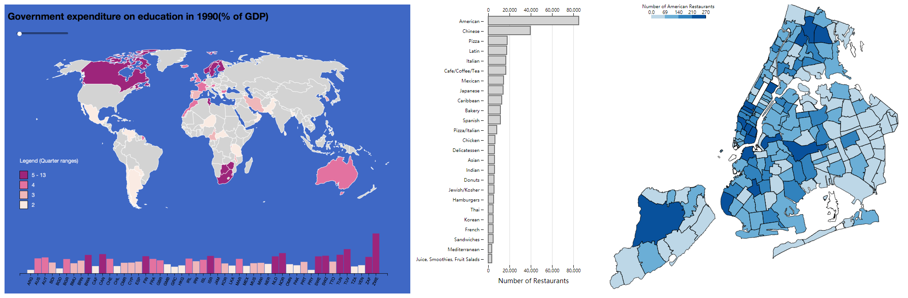

Data Visualization
1.
An interactive tool was developed to explore the relationship between National Education Expenditure and Youth Literacy Rate. This visualization tool consists of two choropleth maps. The top map depicts how much each country in the world spent (% of GDP) on education from 1990 to 2017. The bottom map tells how many people between 15 and 24 in each country in the world can read and write from 1990 to 2017.
Interaction: By dragging the slider bars, the user can observe the change of the two values in each country over the years. There is also bar charts shows the absolute value for each country changing synchronically with the map. A reader can also obtain the specific value of a target country by moving the cursor onto that country. If the reader moves the cursor onto one category in the legend, the map will only display the countries that fall in this category in color.
Methods: Visualization (D3.js), Back-end Web Framework (Flask), Web Hosting (PythonAnywhere).
2.
An interactive tool was developed to explore the distribution of restaurants of different categories in NYC. The bar charts on the left show the total number of restaurants of different categories in NYC. If the user moves the cursor to a category, the choropleth map on the right will show the distribution of restaurants of that category in NYC by zip code.
Methods: Visualization (D3.js).